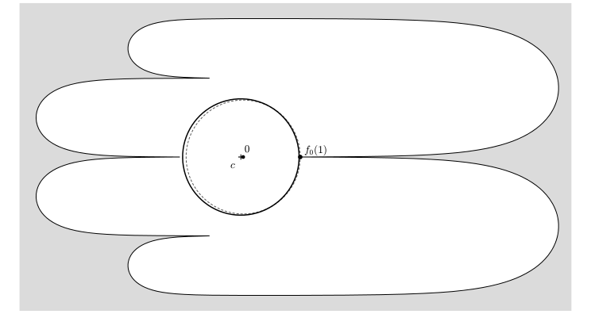

A Lean 4 formalization, using Mathlib's exponential and logarithm bounds, proves the analytic bound U ≥ 0.592 with the Grunsky and Fekete–Szegő inequalities as hypotheses.
Abstract
The univalent Bloch-Landau constant $\mathcal{U}$ is the largest number such that, for every univalent function $f$ on the unit disk, $f(\mathbb{D})$ contains a disk of radius $\mathcal{U} |f'(0)|$. We prove $0.612242\le\mathcal{U}<0.6562681$. The previous lower bound, $0.57088586$, came from growth estimates, which control disks centered at $f(0)$. Our improvement rests on a different mechanism. After Landau's normalization, a $2\times2$ compression of the Grunsky matrix constrains every omitted value through the same two coefficients, and choosing the center of the disk from these coefficients exploits this shared information. A short analytic proof based on this idea gives $\mathcal{U}\ge0.592$; it has been formalized in Lean, with the classical Grunsky and Fekete-Szegő inequalities as the only external inputs. Retaining complex quadratic forms of the matrix gives $\mathcal{U}\ge0.612242$ through a finite interval certificate, and this bound holds for every normalized univalent function with $a_2=0$ and $|a_3|\le1/3$. We also show that no argument based on disks centered at $f(0)$ can give a bound above $0.6$. For the upper bound we construct an explicit domain, bounded by Goodman's first two slit generations, thirty analytic arcs and a circle. We certify $\mathcal{U}<0.6562681$ with a capacity estimate for almost critical arcs, improving the best published bound $0.6563937$.
Problem
The univalent Bloch–Landau constant U is the largest number such that every univalent function f on the unit disk has an image containing a disk of radius U|f'(0)|. The best known bounds were 0.57088586 ≤ U < 0.6563937, and the lower bound came from growth estimates that only control disks centered at f(0).
Approach
After Landau's normalization, a 2×2 compression of the Grunsky matrix constrains every omitted value through the same two coefficients. The disk center is then chosen from these coefficients. A short analytic proof gives U ≥ 0.592 and is formalized in Lean 4, with the Grunsky and Fekete–Szegő inequalities as explicit hypotheses. A stronger bound uses complex quadratic forms of the matrix and is checked by an exhaustive interval-arithmetic certificate in Arb. The upper bound uses an explicit Goodman-type domain with thirty analytic arcs, certified through capacity estimates.

Figure 1. The domain f_{0}(\mathbb{D}) of Proposition 2.2 (white). The disk centered at f_{0}(0)=0 (dashed) is stopped by the omitted point f_{0}(1)=0.5998 . The disk D(c,R) of Theorem 5.1 , with R=0.612242 and the center c=-0.0242 of ( 9 ) computed from the coefficients of f_{0} , lies in f_{0}(\mathbb{D}) (solid); the distance from its center to the boundary is 0.624 . The values 0.5998 , 0.0242
Results
The bounds obtained are 0.612242 ≤ U < 0.6562681, improving both previous bounds. Arguments based on disks centered at f(0) cannot give a lower bound above 0.6.